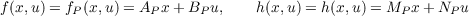
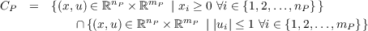

The examples below illustrate the use of the Simulink implementation above.
Example 5.7 (Linear time-invariant plant)
Following the model of a physical component
| ẋ | = f(x,u), | C | := {x | x ∈ ℝn}, | (1a)
|
| x+ | = g(x) = ∅, | D | := ∅, | (1b)
|
| y | = h(x,u) | | | (1c) |
a linear time-invariant model of the physical component is defined by
 where
AP,
BP,
MP, and
NP are matrices of appropriate dimensions. State and input constraints can directly be
embedded into the set
CP. For example, the constraint that
x has all of its components nonnegative and that
u has
its components with norm less or equal than one is captured by

For example, the evolution of the temperature of a room with a heater can be modeled by a linear-time invariant
system with state
x denoting the temperature of the room and with input
u = (
u1,u2), where
u1 denotes whether
the heater is turned on (
u1 = 1) or turned off (
u1 = 0) while
u2 denotes the temperature outside the room. The
evolution of the temperature is given by
where
zΔ is a constant representing the heater capacity. _